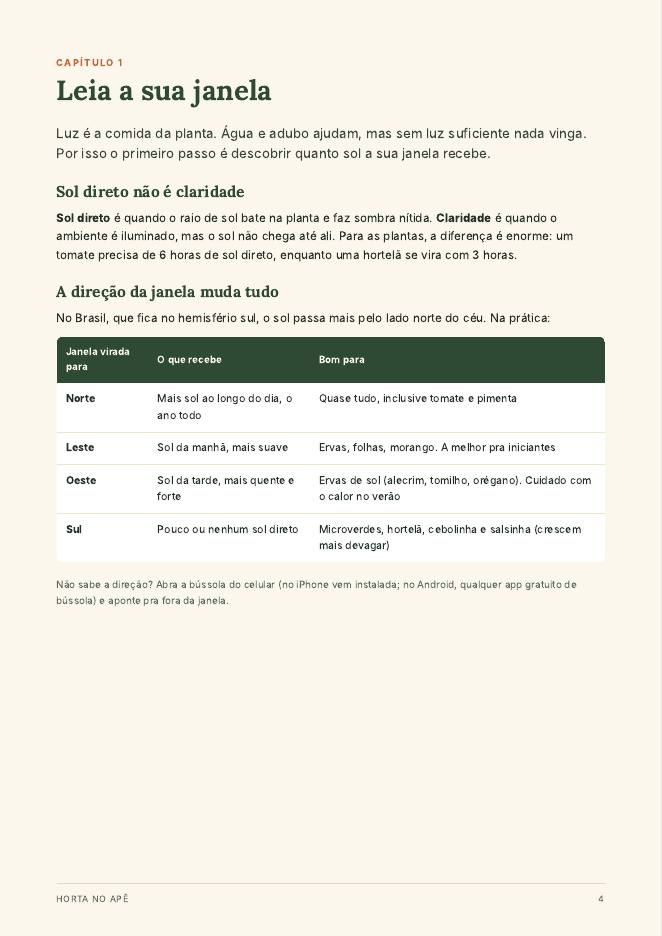
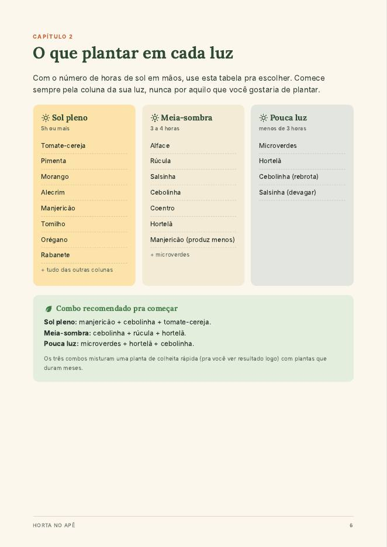
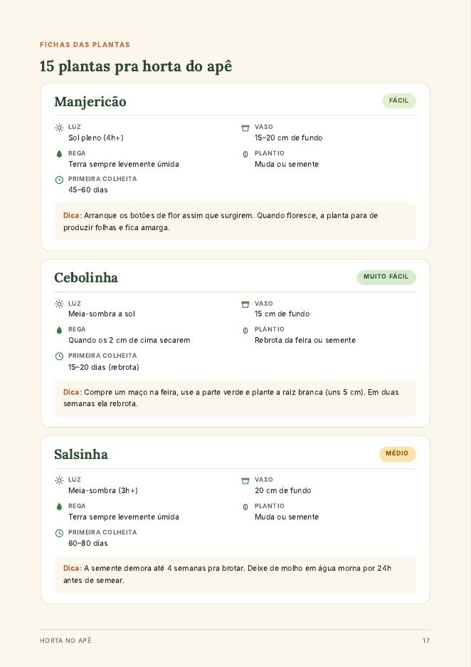
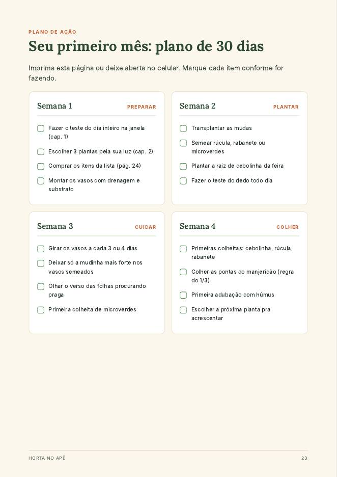

O guia que mostra o que plantar no tipo de luz que a sua janela recebe, como montar vasos baratos e quais erros fazem a planta morrer. Escrito pra quem nunca plantou nada.
Quero montar minha hortaR$ 22 · pagamento únicoNão foi "dedo podre". Quase toda planta de apartamento morre por um destes três motivos, e os três têm solução simples.
Cada planta precisa de uma quantidade de sol. Tomate numa janela sem sol direto nunca vai dar fruto, por mais que você cuide.
Mais plantas morrem afogadas do que de sede. Regar todo dia "por regra" apodrece a raiz.
Sem furo e sem drenagem, a água fica parada no fundo. A planta morre devagar, mesmo com rega certa.
Escolha a opção mais próxima e veja o que dá pra plantar aí. O guia ensina a medir isso com precisão no primeiro capítulo.
Dez capítulos curtos, na ordem em que você vai precisar de cada coisa.
Como descobrir quantas horas de sol você tem, com a direção da janela e um teste de um dia.
A tabela que evita comprar planta que não vai vingar no seu apê.
Tamanho mínimo por planta, opções de graça e um vaso autoirrigável de garrafa PET.
A receita de substrato e como montar as camadas de drenagem.
Quando usar cada uma, e como plantar a cebolinha da feira de graça.
O teste do dedo e uma tabela pra ler os sinais que a planta dá.
Húmus, borra de café e casca de ovo: quanto usar e o que nunca colocar no vaso.
Como reconhecer pulgão e cochonilha, e a receita da calda de sabão.
A regra do 1/3 e onde cortar cada erva pra ela rebrotar mais cheia.
Evitando só estes, você já fica à frente de quase todo mundo.
Tabelas, passo a passo numerado e uma ficha pra cada planta. Abre no celular ou dá pra imprimir.




pagamento único · Pix ou cartão
Quero meu guia agoraReceba no e-mail em minutosGarantia de 7 dias. Se o guia não for o que você esperava, peça o reembolso em até 7 dias após a compra e devolvemos 100% do valor.
Logo depois da confirmação do pagamento você recebe no e-mail o link pra baixar o PDF. No Pix, costuma chegar em poucos minutos.
Serve. O guia tem uma seção só pra pouca luz, com as plantas que se dão bem nessa condição, como microverdes, hortelã e cebolinha.
Não. Tudo foi pensado pra janela e parapeito. Se você tiver varanda, melhor ainda: dá pra plantar mais coisa.
Dá pra começar com pouco, usando garrafa PET e pote de sorvete como vaso. O guia traz uma lista de compras com o essencial e o opcional, pra você decidir.
Sim. O PDF abre em qualquer celular, tablet ou computador, e também pode ser impresso.
Você tem 7 dias pra pedir o reembolso, sem precisar explicar o motivo.
Rabanete fica pronto em 25 a 35 dias, a cebolinha rebrota em 2 semanas. Dá tempo de ver resultado já no primeiro mês.
Começar minha horta por R$ 22Acesso imediato · 7 dias de garantia